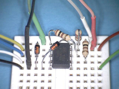

AVR
Dieser Artikel wurde für die folgenden Ubuntu-Versionen getestet:
Ubuntu 16.04 Xenial Xerus
Zum Verständnis dieses Artikels sind folgende Seiten hilfreich:
AVR sind Mikrocontroller der Firma Atmel  , die sich vor allem im Hobbybereich großer Beliebtheit erfreuen. AVR sind 8 Bit RISC Mikrocontroller. Weiterhin gibt es noch die AVR32 mit 32 Bit Datenbreite, welche aber bis auf die Bezeichnung nichts mit den AVRs gemeinsam haben.
, die sich vor allem im Hobbybereich großer Beliebtheit erfreuen. AVR sind 8 Bit RISC Mikrocontroller. Weiterhin gibt es noch die AVR32 mit 32 Bit Datenbreite, welche aber bis auf die Bezeichnung nichts mit den AVRs gemeinsam haben.
Die Typen ATtiny , ATmega und AT90 unterscheiden sich in Gehäusegröße und Peripherieausstattung. Der neueste Typ ist die Familie Xmega , welche mehr Rechenleistung und komplett überarbeitete Peripheriemodule bietet.
Praktischer Aufbau¶
Ein kompletter Aufbau zum Programmieren und Testen von AVR-Mikrocontrollern könnte folgendermaßen aussehen:
Wie auf dem Bild zu sehen, werden die folgenden Komponenten benötigt:
Ein Computer, auf dem das Programm geschrieben wird (siehe Programmierung in Assembler und Programmierung in C)
Ein Programmer, der den Adapter zwischen Mikrocontroller und Computer bildet (siehe Programmierwerkzeug)
Eine Platine mit dem Mikrocontroller und Peripherie darauf (siehe Grundschaltungen)
Ein Netzteil – sofern die Schaltung nicht per USB-Anschluss mit Strom versorgt wird
Diese Komponenten werden nachfolgend einzeln erklärt.
Grundschaltungen¶
| Beispielaufbau auf einer Steckplatine |
| Minimalbeschaltung eines ATtiny13A mit LED |
Empfohlene Mindestanforderungen, um einen AVR-Controller zu betreiben, sind:
5V Betriebsspannung (viele AVR erlauben auch andere Spannungen: z.B. 3.3V. Am besten das Datenblatt konsultieren)
ein 100-nF-Kondensator möglichst direkt an den Versorgungspins (VCC und GND) des Controllers
Da solch eine Schaltung noch nicht sehr viel Interessantes bietet, sollten folgende Komponenten hinzugefügt werden:
Eine Buchse zum Aufspielen des Programms auf den Mikrocontroller (üblich ist hier ein 6- oder 10-poliger Wannenstecker)
Pull-up-Widerstand (z.B. 10 kOhm) und Taster für den Reset
Etwas Peripherie, z.B.:
Leuchtdioden (Widerstand in Reihe schalten, z.B. 470 Ohm)
Taster
Potenziometer
Die Schaltung kann auf einer Lochrasterplatine oder auf einem Steckbrett aufgebaut werden. Alternativ kann man auch fertige Experimentierboards verwenden.
Programmierwerkzeug¶
Um das Programm auf den Mikrocontroller zu übertragen, muss der Computer mit jenem verbunden werden. Vor ein paar Jahren war es noch aktuell, die Controller direkt mit der seriellen oder parallelen Schnittstelle des Computers zu programmieren. Da es kaum noch Computer mit "echter" serieller oder Paralleler Schnittstelle gibt und sich die meisten USB-Seriell-Adapter bzw. USB-Parallel-Adapter für diesen Zweck als ungeeignet erwiesen, ist es meist besser, nur noch auf die neueren Programmer mit eigenem USB-Anschluss zu setzen.
Solche Programmer für die USB-Schnittstelle sind als Original-Atmel-Zubehör erhältlich, man findet sich aber auch sehr preisgünstig über Internet-Auktionen. Außerdem gibt es sehr viele Anleitungen für den Eigenbau. Ein sehr populäres Beispiel ist der "USBasp" von fischl.de , der ebenfalls als Bausatz erhältlich ist. Hier als Originalschaltung mit Gehäuse und als Minimal-Aufbau auf einer Steckplatine:

Die zweite Variante ist eine Weiterentwicklung des originalen USBasp und sowohl als Platinenversion als auch als Breadboardversion unter dem Namen "guloprog" bekannt. Da für den Minimalaufbau nur sechs Bauteile benötigt werden, ist der Nachbau sehr einfach. Die Firmware ist quelloffen und kann über die URL https://guloshop.de/f/sources/  heruntergeladen werden.
heruntergeladen werden.
Wer trotzdem einen fertigen Programmer verwenden möchte, findet neben den Geräten von Atmel ein vielfältiges und preiswertes Angebot vor. Ein Beispiel wäre "mySmartUSB light", der bei fast allen Elektronikversandhändlern erhältlich ist. Es gibt auch Boards, die sowohl eine Grundschaltung mit viel Peripherie zum experimentieren, als auch einen Programmer beinhalten. Das hat den Vorteil, dass man nur ein Board mit dem Computer verbinden muss und die Fehlerquellen minimiert werden. Ein Beispiel für solch ein Board ist der "EasyAVR6":
Programmierung in Assembler¶
Die meisten Programme für Mikrocontroller werden heutzutage in C geschrieben. Assembler verwendet man dann, wenn es um besonders zeitkritische Anwendungen geht oder wenn es innerhalb von C-Programmen besonders zeitkritische Abschnitte gibt. Kaum jemand würde auf die Idee kommen, eine komplexe Anwendung komplett in Assembler zu schreiben. Gerade längere Assembler-Programme sind deutlich schwerer les- und wartbar als vergleichbare C-Programme.
Trotzdem sind Assembler und C für den Einstieg in die Mikrocontroller-Programmierung grundsätzlich gleichermaßen geeignet. Für viele Einsteiger hat C den Vorteil, dass sie die Sprache schon kennen und daher mit den wichtigsten Sprachelementen gut zurecht kommen. Dazu gehört insbesondere die Bitmanipulation (bitweises Und, Oder, Exklusiv-Oder, Shiften usw.). Assembler hingegen bietet den Vorteil, dass man die Funktionsweise des Mikrocontrollers wirklich auf der untersten Ebene kennen lernt. Man kann selbst entscheiden, welches Byte man in welchem Register ablegt. Bei einem späteren Umstieg auf C hat man dadurch einen nützlichen Wissensvorsprung, der klassische Fehler vermeiden hilft und es einem ermöglicht, C-Programme zu schreiben, die für den Einsatz auf Mikrocontrollern optimiert sind.
Assembler bietet einen weiteren – kleinen – Vorteil: der Weg bis zum ersten lauffähigen Programm ist kürzer als bei C. Das liegt aber nicht an der Programmiersprache, sondern lediglich daran, dass bei C zuerst eine komplexere (und leistungsfähigere) Programmierumgebung eingerichtet werden muss als bei Assembler.
Unabhängig von der Entscheidung für Assembler oder C läuft der Programmiervorgang immer nach dem gleichen Schema ab:
Es wird mit einem Editor ein Programm-Text geschrieben.
Das Programm – genauer: die Programm-Text-Datei – wird übersetzt (Assemblierer oder C-Compiler).
Die Ausgabedatei der Übersetzung (Endung ".hex") wird in binärer Form an den Mikrocontroller gesendet.
Einrichten einer Entwicklungsumgebung¶
Das Installieren und Einrichten der benötigen Software ist ausgesprochen einfach. Der Assemblierer AVRA ist gut geeignet, da er ohne Makefiles auskommt und von seiner Syntax her dem Original-Assembler von Atmel weitgehend entspricht. Außerdem benötigt werden ein Texteditor, sowie das Programm avrdude, mit dem später das assemblierte Programm auf den Mikrocontroller übertragen wird. Die Installation beschränkt sich also auf zwei relativ kleine Pakete:
avra (universe)
avrdude (universe)
 mit apturl
mit apturl
Paketliste zum Kopieren:
sudo apt-get install avra avrdude
sudo aptitude install avra avrdude
An Stelle von AVRA kann natürlich auch der Assemblierer aus dem Paket gcc-avr verwendet werden. Damit wäre allerdings der Installationsvorgang komplizierter; auch die Syntax wiche dann in Teilen vom Atmel-Assembler ab, was die Nutzung der in der Original-Dokumentation veröffentlichten Beispiele erschwert. Wer jedoch bereits mit dem GNU-Assembler vertraut ist, kann diesen als Alternative zu AVRA verwenden.
Anhand eines Beispiels für den kleinen 8-Pin-Mikrocontroller ATtiny13A soll gezeigt werden, wie ein Assembler-Programm erstellt, übersetzt und auf den Controller übertragen wird. Dazu wird ein eigenes Verzeichnis eingerichtet, z.B. einen neuen Ordner avr im persönlichen Ordner:
mkdir ~/avr cd ~/avr
Jetzt fehlt nur noch die "Include-Datei" für diese Mikrocontroller. Leider ist diese Datei von Atmel nicht einzeln herunterladbar. Man müsste ein riesiges Softwarepaket, das sogenannte Atmel Studio herunterladen, unter Windows installieren, und diese Datei dann aus einem der Verzeichnisse kopieren. Einfacher ist es, die benötigte Include-Datei im Internet ausfindig zu machen. Am besten sucht man nach den Begriffen "tn13Adef.inc" und "AVR000". Man benötigt eine Datei, die so beginnt:
;***** THIS IS A MACHINE GENERATED FILE - DO NOT EDIT ******************** ;***** Created: 2011-02-09 12:03 ******* Source: ATtiny13A.xml *********** ;************************************************************************* ;* A P P L I C A T I O N N O T E F O R T H E A V R F A M I L Y
Diese Datei kann man nun per wget herunterladen und gleichzeitig umformen:
wget "http://hier_die_Fundstelle_eintragen/tn13Adef.inc" -O - | sed "s/#/;/" | sed "s/.device ATtiny13A/.device ATtiny13/" >~/avr/tn13Adef.inc
Am besten, man besorgt sich gleich die beiden wichtigsten Nachschlagewerke für die AVR-Programmierung, das AVR-Instructionset und das Datenblatt des verwendeten Mikrocontrollertyps:
wget http://www.atmel.com/Images/doc0856.pdf -O ~/avr/instructionset.pdf wget http://www.atmel.com/Images/doc8126.pdf -O ~/avr/datenblatt_attiny13a.pdf
Register des Mikrocontrollers¶
Der ATtiny13A besitzt eine Reihe von Speicherregistern, die für Rechenoperatoren direkt verwendet werden können. Dabei unterscheidet sich der kleine ATtiny13A kaum von den größeren AVR-8-Bit-Mikrocontrollern wie z.B. dem ATtiny861A, ATmega8A, ATmega328 usw. Die wichtigsten dieser Register sind hier beschrieben.
Arbeitsregister r16 bis r31¶
Der ATtiny13A besitzt wie fast alle Typen der 8-Bit-AVR-Familie 32 Arbeitsregister: r0 bis r31. Manche Assembler-Befehle funktionieren nur mit den Registern aus der oberen Hälfte, nämlich r16 bis r31. Aus Gründen der Einfachheit werden im Beispiel nur diese Register benutzt. Mit einem Arbeitsregister kann man beispielsweise Daten lesen, schreiben, bitweise nach links oder rechts schieben, addieren, subtrahieren, vergleichen und bitweise verknüpfen.
Datenrichtungsregister DDRB (Data Direction Register of Port B)¶
Dieses Register bestimmt, welcher Mikrocontroller-Anschluss als Eingang und welcher als Ausgang verwendet wird: eine 0 im entsprechenden Bit bedeutet Eingang, eine 1 bedeutet Ausgang. Der ATtiny13A besitzt nur einen "Port", nämlich den Port B. Ein solcher Port umfasst maximal 8 Ein- und Ausgänge, beim ATtiny13A sind es 5 (in Sonderfällen 6).
Datenausgaberegister PORTB (Port Output B)¶
Für Ausgänge wird hier festgelegt, ob sie niedriges oder hohes Spannungsniveau erhalten sollen. Eine 0 im entsprechenden Bit bedeutet "low" (0 Volt), eine 1 bedeutet "high" (normalerweise 5 Volt). Für Eingänge legen die jeweiligen Bits dieses Registers fest, ob ein Mikrocontroller-interner Pullup-Widerstand aktiviert werden soll.
Dateneingaberegister PINB (Port Input B)¶
Für jeden als Eingang definierten Anschluss enthält dieses Register ein Bit, das das Spannungsniveau repräsentiert: 0 für "low" (unter ca. 2,5 Volt), 1 für "high" (ca. 2,5 Volt oder mehr). Die Abkürzung "PIN" im Registernamen sollte nicht mit "Pin" ("Anschluss") verwechselt werden, sie steht hier für "Port Input".
Spezialregister¶
Neben den oben vorgestellten Datenregistern gibt es noch eine Reihe von Spezialregistern, die in unserem einfachen Beispiel nicht verwendet werden. Hier die wichtigsten:
Register ADMUX, Bit ADLAR: aktiviert 8 Bit Auflösung für den AD-Wandler
Register ADMUX, Bits MUX1 und MUX0: bestimmt den Pin für die AD-Wandlung
Register ADCSRA, Bit ADEN: aktiviert den AD-Wandler
Register TCCR0B, Bits CS00 bis CS02: bestimmt den Wert des Timer-Vorteilers
Register TIMSK0, Bit TOIE0: aktiviert den Überlauf-Interrupt für den Timer
Assembler-Befehle¶
Hier ein kurzer Überblick über die wichtigsten Assembler-Befehle. In dem einfachen Beispielprogramm werden nur wenige davon gebraucht.
| Beispielbefehl | Erklärung |
ldi r16,123 | schreibe die konstante Zahl 123 ins Register R16 (Load Immediate) |
inc r16 | erhöhe den Inhalt des Registers r16 um eins (Increment) |
dec r16 | veringere den Inhalt des Registers r16 um eins (Decrement) |
add r16,r17 | addiere den Inhalt von r17 zum Register r16 (Add) |
sub r16,r17 | subtrahiere den Inhalt von r17 von Register r16 (Subtract) |
subi r16,3 | subtrahiere die Konstante 3 von Register r16 (Subtract Immediate) |
subi r16,-5 | addiere die Konstante 5 zum Register r16 (Subtract Immediate) |
lsl r16 | verschiebe den Inhalt von r16 um eine Binärstelle nach links (Logical Shift Left) |
lsr r16 | verschiebe den Inhalt von r16 um eine Binärstelle nach rechts (Logical Shift Right) |
in r16,ADCH | übertrage den Inhalt von Datenregister ADCH ins Arbeitsregister r16 (Load an I/O Location to Register) |
out DDRB,r16 | übertrage den Inhalt von Arbeitsregister r16 ins Datenregister DDRB (Store Register to I/O Location) |
cbi PORTB,0 | setze das Bit Nummer 0 im Datenregister PORTB auf 0 (Clear Bit in I/O Register) |
sbi PORTB,0 | setze das Bit Nummer 0 im Datenregister PORTB auf 1 (Set Bit in I/O Register) |
sbic PINB,4 | überspringe nächsten Befehl, falls Bit 4 im Register PINB auf "low" liegt (Skip if Bit in I/O Register is Cleared) |
sbis PINB,4 | überspringe nächsten Befehl, falls Bit 4 im Register PINB auf "high" liegt (Skip if Bit in I/O Register is Set) |
sei | Freigabe aller aktivierten Interrupts (Set Global Interrupt Flag) |
eine_position: | Sprungmarke – hierher kann mit rjmp oder rcall gesprungen werden (Label) |
rjmp eine_position | springe zur entsprechend markierten Stelle (Relative Jump) |
rjmp PC-1 | springe zum vorherigen Befehl (Relative Jump) |
breq eine_position | springe, falls das letzte Ergebnis 0 war (Branch if Equal) |
brne eine_position | springe, falls das letzte Ergebnis nicht 0 war (Branch if Not Equal) |
rcall ein_unterprogramm | springe zum entsprechend markierten Unterprogramm(Relative Call to Subroutine) |
ret | beende das Unterprogramm und springe zurück zum Hauptprogramm (Return from Subroutine) |
reti | beende das Interrupt-Unterprogramm und setze das normale Programm fort (Return from Interrupt) |
Schreiben eines Programms¶
Das Beispielprogramm soll einen Anschluss des Mikrocontrollers, nämlich PB0 – das ist beim ATtiny13A der Pin 5 – ständig zwischen Low und High umschalten. Dazu wird im vorhin angelegten Verzeichnis avr/ eine neue Datei mit dem Namen beispiel.asm erstellt. Die Endung .asm deutet darauf hin, dass es sich um den Assembler-Quelltext handelt. Der Inhalt dieser Beispieldatei:
; Beispiel-Projekt beispiel.asm .include "tn13Adef.inc" ; Definitionen für unseren Mikrocontrollertyp ldi r16,0b00001 ; schreibe den Zahlenwert 1 ins Register Nummer 16 out DDRB,r16 ; Inhalt des Registers 16 ins Datenrichtungsregister ldi r16,0b11110 ; binären Zahlenwert 11110 ins Register Nummer 16 out PORTB,r16 ; Inhalt des Registers 16 ins Ausgaberegister loop: ; ab hier der Teil des Programms, der ständig wiederholt wird sbi PORTB,0 ; schalte die Leuchtdiode ein rcall warten ; Aufruf des Warte-Unterprogramms cbi PORTB,0 ; schalte die Leuchtdiode aus rcall warten ; Aufruf des Warte-Unterprogramms rjmp loop ; springe zum Label 'loop' warten: ; ca. 1/6 Sekunde verzögern inc r21 brne PC-1 inc r22 brne PC-3 ret ; Rücksprung ins Hauptprogramm
Übersetzen des Programms¶
Das Übersetzen eines Assembler-Programmtexts wird meist als "Assemblieren" bezeichnet. Beim Assemblieren wird jede Befehlszeile in den zugehörigen Maschinencode umgewandelt. Erst dieser Maschinencode kann vom Mikrocontroller direkt gelesen und "verstanden" werden. AVRA speichert den Maschinencode in eine neue Datei und gibt dieser die Endung .hex. In dieser Datei befindet sich nicht direkt binärer Code, vielmehr wurde der binäre Code in menschenlesbarer Form, also in Form von druckbaren Zeichen gespeichert. Erst beim Übertragen zum Mikrocontroller wird dieser lesbare Code wieder in seine ursprüngliche binäre Form zurückverwandelt. Aber dazu später. Zunächst muss das kleine Assemblerprogramm übersetzt werden. Dazu reicht eine einzige Befehlszeile:
avra beispiel.asm
Falls der Programmtext ohne Fehler war, hat der Assemblierer jetzt die Datei beispiel.hex erstellt.
Programm aufspielen¶
| Anschlussbelegung des ATtiny13 |
Vor dem Übertragen des Programms auf den Mikrocontroller muss dieser korrekt an den verwendeten Programmer angeschlossen werden. Zu verbinden sind die Leitungen VCC, GND, MOSI, MISO, SCK und RESET, auf nebenstehendem Bild in den Farben Rot, Schwarz, Grün, Weiß, Blau und Gelb dargestellt.
Die Datei beispiel.hex muss nun in binärer Form übertragen werden. Dazu wird das Programm avrdude verwendet. Es ist zweckmäßig, vor der Übertragung zu prüfen, ob der Programmer korrekt an den Computer und der Mikrocontroller korrekt an den Programmer angeschlossen ist. Dazu eignet sich ein harmloser Befehl, der nur das so genannte Fuse Low Byte aus dem Mikrocontroller ausliest:
avrdude -c usbasp -p t13 -B 60 -P usb -U lfuse:r:/dev/stdout:b
Falls ein anderer Programmer als USBasp verwendet wird, muss der Parameter -c entsprechend angepasst werden. Je nach Berechtigungen des Benutzers kann es erforderlich sein, vor den Befehl ein "sudo" zu setzen. Die Ausgabe sollte so aussehen:
avrdude: set SCK frequency to 16000 Hz avrdude: AVR device initialized and ready to accept instructions Reading | ################################################## | 100% 0.02s avrdude: Device signature = 0x1e9007 avrdude: reading lfuse memory: Reading | ################################################## | 100% 0.01s avrdude: writing output file "/dev/stdout" 0b1101010 avrdude: safemode: Fuses OK avrdude done. Thank you.
Die Ausgabe "0b1101010" zeigt das Low Fuse Byte in Fabrikeinstellung. Falls bei diesem Test Fehler angezeigt wurden, sollte zuerst den Hinweisen von avrdude nachgegangen werden. Einzige Ausnahme ist der möglicherweise angezeigte Vorschlag "Override with -F". Genau das sollte man bei gängigen Controllertypen wie dem ATtiny13A nicht tun, weil der betreffende Fehler dann zwar ignoriert wird, aber trotzdem noch vorhanden ist.
Lief der Test fehlerfrei, kann nun das Programm übertragen werden:
avrdude -c usbasp -p t13 -B 60 -P usb -U flash:w:beispiel.hex:i
Im Fall des USBasp wird das Programm sofort nach der Übertragung starten und die LED blinkt in schneller Folge (ca. 3 Hz). Bei anderen Programmern kann es notwendig sein, die Schaltung von den sechs Programmierleitungen zu trennen und eigens per VCC und GND mit einer Spannung zu versorgen (z.B. 5 Volt).
Und – hat etwas nicht geklappt? Dann hilft vielleicht der Abschnitt Fehlerbehandlung weiter.
Programmierung in C¶
Vorab sollte erwähnt werden, dass der Begriff "programmieren" im Bereich Mikrocontroller zweideutig sein kann. Mit "C programmieren" ist das Schreiben eines Programms für den Mikrocontroller in der Sprache C gemeint. Das "Programmieren eines Mikrocontrollers" ist der Prozess des Übertragens des geschriebenen Programms mit einem Programmieradapter auf den Mikrocontroller.
Die Programmierung von AVRs wird hier für C gezeigt, da C eine weit verbreitete Programmiersprache im Mikrocontrollerbereich ist. Dies hängt damit zusammen, dass aktuelle Compiler den Code so effizient und optimiert in Assembler übersetzen können, dass der Geschwindigkeitsnachteil gegenüber handgeschriebenem Assemblercode für die meisten Anwendungen nur noch klein ist und die Vorteile dieser Hochsprache überwiegen. Bei besonders zeitkritischen Steuerungen oder in Fällen, in denen mit minimaler Hardware maximale Rechenleistung erzielt werden soll (Kostenoptimierung bei sehr großen Stückzahlen) wird trotzdem in der Regel auch auf Assembler zurückgegriffen.
Einrichten einer Entwicklungsumgebung¶
Das Schreiben des Programms erfolgt oft in einer IDE. Dies ist ein Editor, der mit Zusatzfunktionen ausgestattet ist, die das Schreiben und Testen eines Programms erleichtern. Die offizielle IDE für AVRs ist das Atmel Studio , welches allerdings nur für Windows erhältlich ist. Als Alternative stehen unter Linux von je her sehr viele sehr gute Editoren zur Verfügung. Diese bieten meist eine Möglichkeit Tastenkürzel und Schaltflächen nach eigenen Wünschen zu konfigurieren und können so einfach mit Hilfe von Skripten zu einer IDE erweitert werden.
Wie dies funktioniert, soll hier am Beispiel des Editors Geany erläutert werden. Des Weiteren benötigt man einige Werkzeuge, um den Quellcode in Maschinensprache zu übersetzen und diesen auf den AVR übertragen zu können. Die nachfolgenden Pakete ermöglichen die Programmierung eines AVR in C und C++.
avr-libc (universe)
binutils-avr (universe)
gcc-avr (universe)
avrdude (universe)
mit apturl
Paketliste zum Kopieren:
sudo apt-get install avr-libc binutils-avr gcc-avr avrdude
sudo aptitude install avr-libc binutils-avr gcc-avr avrdude
Experten-Info:
Genau genommen kann man mit Hilfe dieser Pakete den AVR ebenfalls in Assembler programmieren, dies ist aber etwas umständlich. Unter Ubuntu verfügbare AVR-Assembler lassen sich leicht mit
apt-cache search avr
auffinden.
Nach der Installation startet man Geany und speichert eine leere Datei. Dazu erstellt man einen Projektordner und speichert darin die Datei als main.c. Der Pfad zur Datei könnte dann beispielsweise so lauten: ~/Programmierung/AVRs/AVRTutorial/main.c
Jetzt müssen mikrocontrollerspezifische Skripte eingebunden werden. Dazu geht man im Menü auf "Erstellen -> Kommandos zu erstellen Konfigurieren". Jetzt kann man die Kommandos für eine C-Datei (desshalb wurde im ersten Schritt die Datei mit der Endung .c gespeichert) anpassen. Die bisherigen Einstellungen werden durch folgende ersetzt:
"Kompilieren":
make all. "Arbeitsverzeichnis":%d"Erstellen":
make program, "Arbeitsverzeichnis":%d
Anschließend muss man in Geany eine weitere Datei erstellen, die das mikrocontrollerspezifische Skript darstellt. Es heißt makefile (siehe auch Makefile) und wird im selben Ordner wie main.c gespeichert. Inhalt ist folgender (Kopie aus WinAVR-IDE von 2004):
1 2 3 4 5 6 7 8 9 10 11 12 13 14 15 16 17 18 19 20 21 22 23 24 25 26 27 28 29 30 31 32 33 34 35 36 37 38 39 40 41 42 43 44 45 46 47 48 49 50 51 52 53 54 55 56 57 58 59 60 61 62 63 64 65 66 67 68 69 70 71 72 73 74 75 76 77 78 79 80 81 82 83 84 85 86 87 88 89 90 91 92 93 94 95 96 97 98 99 100 101 102 103 104 105 106 107 108 109 110 111 112 113 114 115 116 117 118 119 120 121 122 123 124 125 126 127 128 129 130 131 132 133 134 135 136 137 138 139 140 141 142 143 144 145 146 147 148 149 150 151 152 153 154 155 156 157 158 159 160 161 162 163 164 165 166 167 168 169 170 171 172 173 174 175 176 177 178 179 180 181 182 183 184 185 186 187 188 189 190 191 192 193 194 195 196 197 198 199 200 201 202 203 204 205 206 207 208 209 210 211 212 213 214 215 216 217 218 219 220 221 222 223 224 225 226 227 228 229 230 231 232 233 234 235 236 237 238 239 240 241 242 243 244 245 246 247 248 249 250 251 252 253 254 255 256 257 258 259 260 261 262 263 264 265 266 267 268 269 270 271 272 273 274 275 276 277 278 279 280 281 282 283 284 285 286 287 288 289 290 291 292 293 294 295 296 297 298 299 300 301 302 303 304 305 306 307 308 309 310 311 312 313 314 315 316 317 318 319 320 321 322 323 324 325 326 327 328 329 330 331 332 333 334 335 336 337 338 339 340 341 342 343 344 345 346 347 348 349 350 351 352 353 354 355 356 357 358 359 360 361 362 363 364 365 366 367 368 369 370 371 372 373 374 375 376 377 378 379 380 381 382 383 384 385 386 387 388 389 390 391 392 393 394 395 396 397 398 399 400 401 402 403 404 405 406 407 408 409 410 411 412 413 414 415 416 417 418 419 420 421 422 423 424 425 426 427 428 429 430 431 432 433 434 435 | # Hey Emacs, this is a -*- makefile -*- # # WinAVR makefile written by Eric B. Weddington, Jörg Wunsch, et al. # Released to the Public Domain # Please read the make user manual! # # Additional material for this makefile was submitted by: # Tim Henigan # Peter Fleury # Reiner Patommel # Sander Pool # Frederik Rouleau # Markus Pfaff # # On command line: # # make all = Make software. # # make clean = Clean out built project files. # # make coff = Convert ELF to AVR COFF (for use with AVR Studio 3.x or VMLAB). # # make extcoff = Convert ELF to AVR Extended COFF (for use with AVR Studio # 4.07 or greater). # # make program = Download the hex file to the device, using avrdude. Please # customize the avrdude settings below first! # # make filename.s = Just compile filename.c into the assembler code only # # To rebuild project do "make clean" then "make all". # # mth 2004/09 # Differences from WinAVR 20040720 sample: # - DEPFLAGS according to Eric Weddingtion's fix (avrfreaks/gcc-forum) # - F_OSC Define in CFLAGS and AFLAGS # MCU name MCU = atmega16 # Main Oscillator Frequency # This is only used to define F_OSC in all assembler and c-sources. F_OSC = 3686400 # Output format. (can be srec, ihex, binary) FORMAT = ihex # Target file name (without extension). TARGET = main # List C source files here. (C dependencies are automatically generated.) SRC = $(TARGET).c # List Assembler source files here. # Make them always end in a capital .S. Files ending in a lowercase .s # will not be considered source files but generated files (assembler # output from the compiler), and will be deleted upon "make clean"! # Even though the DOS/Win* filesystem matches both .s and .S the same, # it will preserve the spelling of the filenames, and gcc itself does # care about how the name is spelled on its command-line. ASRC = # Optimization level, can be [0, 1, 2, 3, s]. # 0 = turn off optimization. s = optimize for size. # (Note: 3 is not always the best optimization level. See avr-libc FAQ.) OPT = s # Debugging format. # Native formats for AVR-GCC's -g are stabs [default], or dwarf-2. # AVR (extended) COFF requires stabs, plus an avr-objcopy run. #DEBUG = stabs DEBUG = dwarf-2 # List any extra directories to look for include files here. # Each directory must be seperated by a space. EXTRAINCDIRS = # Compiler flag to set the C Standard level. # c89 - "ANSI" C # gnu89 - c89 plus GCC extensions # c99 - ISO C99 standard (not yet fully implemented) # gnu99 - c99 plus GCC extensions CSTANDARD = -std=gnu99 # Place -D or -U options here CDEFS = # Place -I options here CINCS = # Compiler flags. # -g*: generate debugging information # -O*: optimization level # -f...: tuning, see GCC manual and avr-libc documentation # -Wall...: warning level # -Wa,...: tell GCC to pass this to the assembler. # -adhlns...: create assembler listing CFLAGS = -g$(DEBUG) CFLAGS += $(CDEFS) $(CINCS) CFLAGS += -O$(OPT) CFLAGS += -funsigned-char -funsigned-bitfields -fpack-struct -fshort-enums CFLAGS += -Wall -Wstrict-prototypes CFLAGS += -Wa,-adhlns=$(<:.c=.lst) CFLAGS += $(patsubst %,-I%,$(EXTRAINCDIRS)) CFLAGS += $(CSTANDARD) CFLAGS += -DF_OSC=$(F_OSC) # Assembler flags. # -Wa,...: tell GCC to pass this to the assembler. # -ahlms: create listing # -gstabs: have the assembler create line number information; note that # for use in COFF files, additional information about filenames # and function names needs to be present in the assembler source # files -- see avr-libc docs [FIXME: not yet described there] ASFLAGS = -Wa,-adhlns=$(<:.S=.lst),-gstabs ASFLAGS += -DF_OSC=$(F_OSC) #Additional libraries. # Minimalistic printf version PRINTF_LIB_MIN = -Wl,-u,vfprintf -lprintf_min # Floating point printf version (requires MATH_LIB = -lm below) PRINTF_LIB_FLOAT = -Wl,-u,vfprintf -lprintf_flt PRINTF_LIB = # Minimalistic scanf version SCANF_LIB_MIN = -Wl,-u,vfscanf -lscanf_min # Floating point + %[ scanf version (requires MATH_LIB = -lm below) SCANF_LIB_FLOAT = -Wl,-u,vfscanf -lscanf_flt SCANF_LIB = MATH_LIB = -lm # External memory options # 64 KB of external RAM, starting after internal RAM (ATmega128!), # used for variables (.data/.bss) and heap (malloc()). #EXTMEMOPTS = -Wl,-Tdata=0x801100,--defsym=__heap_end=0x80ffff # 64 KB of external RAM, starting after internal RAM (ATmega128!), # only used for heap (malloc()). #EXTMEMOPTS = -Wl,--defsym=__heap_start=0x801100,--defsym=__heap_end=0x80ffff EXTMEMOPTS = # Linker flags. # -Wl,...: tell GCC to pass this to linker. # -Map: create map file # --cref: add cross reference to map file LDFLAGS = -Wl,-Map=$(TARGET).map,--cref LDFLAGS += $(EXTMEMOPTS) LDFLAGS += $(PRINTF_LIB) $(SCANF_LIB) $(MATH_LIB) # Programming support using avrdude. Settings and variables. # Programming hardware: alf avr910 avrisp bascom bsd # dt006 pavr picoweb pony-stk200 sp12 stk200 stk500 # # Type: avrdude -c ? # to get a full listing. # AVRDUDE_PROGRAMMER = stk500 # com1 = serial port. Use lpt1 to connect to parallel port. AVRDUDE_PORT = usb # programmer connected to serial device AVRDUDE_WRITE_FLASH = -U flash:w:$(TARGET).hex #AVRDUDE_WRITE_EEPROM = -U eeprom:w:$(TARGET).eep # Uncomment the following if you want avrdude's erase cycle counter. # Note that this counter needs to be initialized first using -Yn, # see avrdude manual. #AVRDUDE_ERASE_COUNTER = -y # Uncomment the following if you do /not/ wish a verification to be # performed after programming the device. #AVRDUDE_NO_VERIFY = -V # Increase verbosity level. Please use this when submitting bug # reports about avrdude. See <http://savannah.nongnu.org/projects/avrdude> # to submit bug reports. #AVRDUDE_VERBOSE = -v -v AVRDUDE_FLAGS = -p $(MCU) -P $(AVRDUDE_PORT) -c $(AVRDUDE_PROGRAMMER) AVRDUDE_FLAGS += $(AVRDUDE_NO_VERIFY) AVRDUDE_FLAGS += $(AVRDUDE_VERBOSE) AVRDUDE_FLAGS += $(AVRDUDE_ERASE_COUNTER) # --------------------------------------------------------------------------- # Define directories, if needed. DIRAVR = c:/winavr DIRAVRBIN = $(DIRAVR)/bin DIRAVRUTILS = $(DIRAVR)/utils/bin DIRINC = . DIRLIB = $(DIRAVR)/avr/lib # Define programs and commands. SHELL = sh CC = avr-gcc OBJCOPY = avr-objcopy OBJDUMP = avr-objdump SIZE = avr-size NM = avr-nm AVRDUDE = avrdude REMOVE = rm -f COPY = cp # Define Messages # English MSG_ERRORS_NONE = Errors: none MSG_BEGIN = -------- begin -------- MSG_END = -------- end -------- MSG_SIZE_BEFORE = Size before: MSG_SIZE_AFTER = Size after: MSG_COFF = Converting to AVR COFF: MSG_EXTENDED_COFF = Converting to AVR Extended COFF: MSG_FLASH = Creating load file for Flash: MSG_EEPROM = Creating load file for EEPROM: MSG_EXTENDED_LISTING = Creating Extended Listing: MSG_SYMBOL_TABLE = Creating Symbol Table: MSG_LINKING = Linking: MSG_COMPILING = Compiling: MSG_ASSEMBLING = Assembling: MSG_CLEANING = Cleaning project: # Define all object files. OBJ = $(SRC:.c=.o) $(ASRC:.S=.o) # Define all listing files. LST = $(ASRC:.S=.lst) $(SRC:.c=.lst) # Compiler flags to generate dependency files. ### GENDEPFLAGS = -Wp,-M,-MP,-MT,$(*F).o,-MF,.dep/$(@F).d GENDEPFLAGS = -MD -MP -MF .dep/$(@F).d # Combine all necessary flags and optional flags. # Add target processor to flags. ALL_CFLAGS = -mmcu=$(MCU) -I. $(CFLAGS) $(GENDEPFLAGS) ALL_ASFLAGS = -mmcu=$(MCU) -I. -x assembler-with-cpp $(ASFLAGS) # Default target. all: begin gccversion sizebefore build sizeafter finished end build: elf hex eep lss sym elf: $(TARGET).elf hex: $(TARGET).hex eep: $(TARGET).eep lss: $(TARGET).lss sym: $(TARGET).sym # Eye candy. # AVR Studio 3.x does not check make's exit code but relies on # the following magic strings to be generated by the compile job. begin: @echo @echo $(MSG_BEGIN) finished: @echo $(MSG_ERRORS_NONE) end: @echo $(MSG_END) @echo # Display size of file. HEXSIZE = $(SIZE) --target=$(FORMAT) $(TARGET).hex ELFSIZE = $(SIZE) -A $(TARGET).elf sizebefore: @if [ -f $(TARGET).elf ]; then echo; echo $(MSG_SIZE_BEFORE); $(ELFSIZE); echo; fi sizeafter: @if [ -f $(TARGET).elf ]; then echo; echo $(MSG_SIZE_AFTER); $(ELFSIZE); echo; fi # Display compiler version information. gccversion : @$(CC) --version # Program the device. program: $(TARGET).hex $(TARGET).eep $(AVRDUDE) $(AVRDUDE_FLAGS) $(AVRDUDE_WRITE_FLASH) $(AVRDUDE_WRITE_EEPROM) # Convert ELF to COFF for use in debugging / simulating in AVR Studio or VMLAB. COFFCONVERT=$(OBJCOPY) --debugging \ --change-section-address .data-0x800000 \ --change-section-address .bss-0x800000 \ --change-section-address .noinit-0x800000 \ --change-section-address .eeprom-0x810000 coff: $(TARGET).elf @echo @echo $(MSG_COFF) $(TARGET).cof $(COFFCONVERT) -O coff-avr $< $(TARGET).cof extcoff: $(TARGET).elf @echo @echo $(MSG_EXTENDED_COFF) $(TARGET).cof $(COFFCONVERT) -O coff-ext-avr $< $(TARGET).cof # Create final output files (.hex, .eep) from ELF output file. %.hex: %.elf @echo @echo $(MSG_FLASH) $@ $(OBJCOPY) -O $(FORMAT) -R .eeprom $< $@ %.eep: %.elf @echo @echo $(MSG_EEPROM) $@ -$(OBJCOPY) -j .eeprom --set-section-flags=.eeprom="alloc,load" \ --change-section-lma .eeprom=0 -O $(FORMAT) $< $@ # Create extended listing file from ELF output file. %.lss: %.elf @echo @echo $(MSG_EXTENDED_LISTING) $@ $(OBJDUMP) -h -S $< > $@ # Create a symbol table from ELF output file. %.sym: %.elf @echo @echo $(MSG_SYMBOL_TABLE) $@ $(NM) -n $< > $@ # Link: create ELF output file from object files. .SECONDARY : $(TARGET).elf .PRECIOUS : $(OBJ) %.elf: $(OBJ) @echo @echo $(MSG_LINKING) $@ $(CC) $(ALL_CFLAGS) $(OBJ) --output $@ $(LDFLAGS) # Compile: create object files from C source files. %.o : %.c @echo @echo $(MSG_COMPILING) $< $(CC) -c $(ALL_CFLAGS) $< -o $@ # Compile: create assembler files from C source files. %.s : %.c $(CC) -S $(ALL_CFLAGS) $< -o $@ # Assemble: create object files from assembler source files. %.o : %.S @echo @echo $(MSG_ASSEMBLING) $< $(CC) -c $(ALL_ASFLAGS) $< -o $@ # Target: clean project. clean: begin clean_list finished end clean_list : @echo @echo $(MSG_CLEANING) $(REMOVE) $(TARGET).hex $(REMOVE) $(TARGET).eep $(REMOVE) $(TARGET).obj $(REMOVE) $(TARGET).cof $(REMOVE) $(TARGET).elf $(REMOVE) $(TARGET).map $(REMOVE) $(TARGET).obj $(REMOVE) $(TARGET).a90 $(REMOVE) $(TARGET).sym $(REMOVE) $(TARGET).lnk $(REMOVE) $(TARGET).lss $(REMOVE) $(OBJ) $(REMOVE) $(LST) $(REMOVE) $(SRC:.c=.s) $(REMOVE) $(SRC:.c=.d) $(REMOVE) .dep/* # Include the dependency files. -include $(shell mkdir .dep 2>/dev/null) $(wildcard .dep/*) # Listing of phony targets. .PHONY : all begin finish end sizebefore sizeafter gccversion \ build elf hex eep lss sym coff extcoff \ clean clean_list program |
Zusätzlich muss das Makefile an das eigene Projekt angepasst werden:
1 2 | # MCU name MCU = atmega16 |
Hier muss der verwendete Mikrocontroller eingetragen werden.
1 2 3 | # Main Oscillator Frequency # This is only used to define F_OSC in all assembler and c-sources. F_OSC = 3686400 |
Hier wird die verwendete Taktrate angegeben. Wird diese falsch angegeben, stimmen Timerzeiten nicht und Schnittstellen wie UART funktionieren nicht mehr. Kauft man einen neuen AVR, so ist der intern erzeugte Standardtakt meist 1 MHz (beim ATtiny13A 1,2 MHz).
Etwas weiter unten (etwas Mitte des Skripts) findet man dann folgendes:
1 2 3 4 5 6 7 8 9 | # Programming support using avrdude. Settings and variables. # Programming hardware: alf avr910 avrisp bascom bsd # dt006 pavr picoweb pony-stk200 sp12 stk200 stk500 # # Type: avrdude -c ? # to get a full listing. # AVRDUDE_PROGRAMMER = stk500 |
Hier wird der verwendete Programmer eingetragen, z.B. USBasp.
1 2 | # com1 = serial port. Use lpt1 to connect to parallel port. AVRDUDE_PORT = usb # programmer connected to serial device |
Hier wird festgelegt, wie sich avrdude mit dem Programmer verbindet. Im Fall des USBasp ist usb die richtige Angabe.
Des Weiteren hat der normale Benutzer unter Ubuntu meist nicht die Rechte, den Programmer zu verwenden. Im einfachsten Fall kann man mit Hilfe einer udev-Regel dem Benutzer diese Rechte verschaffen. Dazu muss folgender Text nach /etc/udev/rules.d/99_usbprog.rules kopiert werden:
1 2 3 4 5 6 7 8 9 10 11 | # Atmel AVR ISP mkII
SUBSYSTEM=="usb", ATTRS{idVendor}=="03eb", ATTRS{idProduct}=="2104", GROUP="plugdev", MODE="0660"
# usbprog bootloader
ATTRS{idVendor}=="1781", ATTRS{idProduct}=="0c62", GROUP="plugdev", MODE="0660"
# USBasp programmer
ATTRS{idVendor}=="16c0", ATTRS{idProduct}=="05dc", GROUP="plugdev", MODE="0660"
# USBtiny programmer
ATTRS{idVendor}=="1781", ATTRS{idProduct}=="0c9f", GROUP="plugdev", MODE="0660"
|
Damit sollten die meist benutzen Programmer abgedeckt sein. Sollte man einen anderen Programmer haben, so kann man ihn nach diesem Schema hinzufügen. Die Nummer idVendor und idProdukt findet man über das Terminal [2] mit Hilfe
lsusb
während der Programmer angesteckt ist. Nach dem die Datei angelegt wurde, muss der Programmer ab- und wieder angesteckt werden, damit die Regel übernommen wird.
Schreiben eines Programms¶
In diesem Schritt wird dem Mikrocontroller gesagt, was er zu tun hat. Dazu müssen die entsprechenden Anweisungen in die eben gespeicherte main.c geschrieben werden. Ein Grundgerüst für diesen Quelltext sieht folgendermaßen aus:
1 2 3 4 5 6 7 8 9 10 11 12 13 | #include <avr/io.h> // Einbinden von Einstellungen/Definitionen/usw. für den Mikrocontroller int main (void) // Hauptprogramm, hier startet der Mikrocontroller { // Initialisierung while(1) // Nie endende Hauptschleife (Endlosschleife) { // Einlesen // Verarbeiten // Ausgeben } // Ende der Endlosschleife (Es wird wieder zu "while(1)" gesprungen) return 0; // Wird nie erreicht, aber ohne schreibt der GCC eine Warnung } // Ende des Hauptprogramms |
Dieses Programm könnte man jetzt auch schon übersetzen und auf einen Mikrocontroller übertragen. Allerdings wird man keinen Unterschied zu einem unprogrammierten Mikrocontroller erkennen, da das Programm bis jetzt noch nichts macht, außer in einer Endlosschleife zu rotieren, was man von Außen nicht sehen kann.
Nun kann man das Programm beispielsweise folgendermaßen erweitern:
1 2 3 4 5 6 7 8 9 10 11 12 13 14 15 16 | #include <avr/io.h> // Einbinden von Einstellungen/Definitionen/usw. für den Mikrocontroller #include <util/delay.h> // Einbinden der _delay_ms()-Funktion um Wartezeiten zu erzeugen int main (void) // Hauptprogramm, hier startet der Mikrocontroller { unsigned char zwischenspeicher; // Initialisierung DDRA = 0b00000001; while(1) // Nie endende Hauptschleife (Endlosschleife) { zwischenspeicher = PORTA; // Einlesen zwischenspeicher = zwischenspeicher ^ 0b00000001; // Verarbeiten PORTA = zwischenspeicher; // Ausgeben _delay_ms(500); // Wartezeit von 500ms } // Ende der Endlosschleife (Es wird wieder zu "while(1)" gesprungen) return 0; // Wird nie erreicht, aber ohne schreibt der GCC eine Warnung } // Ende des Hauptprogramms |
Eine kurze Erklärung zum Quellcode:
Initialisierung: Zuerst wird die Variable
zwischenspeicherangelegt, diese ist 8 Bit breit und kann somit eine Ganzzahl von 0-255 aufnehmen. Eine Zeile weiter wird ein Ausgang erstellt. Bei AVRs sind die Pins in Ports zu jeweils 8 Pins zusammengefasst. Jeder Port hat somit so viele Pins, wie ein Byte Bits hat. Damit steht jedes Bit im Byte (0b00000001) für einen Pin des Port A (DDRA). Man kann jetzt sehen, dass die sieben höherwertigen Pins eine 0 und der niederwertigste Pins eine 1 in deren DDR-Register geschrieben bekommen. Das hat zur Folge, dass der niederwertigste PortA-Pin (PA0) zu einem Ausgang wird. Das heißt0= Eingang und1= Ausgang.Einlesen: Nun folgt das Einlesen des Status eines Ausgangs. Da man nicht einen Pin alleine auslesen kann, sondern immer nur einen ganzen Port, wird der ganze 8 Pins breite Port in die ebenfalls 8 Bit breite Variable
zwischenspeicherkopiert. Dort ist nun abgelegt, welcher Ausgang high (1) und welcher low (0) ist.Verarbeiten: Als nächstes soll der Status des niederwertigsten Bits von
zwischenspeicherumgekehrt werden. Dies ist mit der logischen Verknüpfung XOR am einfachsten. Alle Bits, die in dem rechten Byte 1 sind werden umgekehrt.Ausgeben: Da das niederwertigste Bit jetzt umgekehrt ist, kann der Inhalt von
zwischenspeicherwieder ausgegeben werden.Wartezeit: Ein Mikrocontroller arbeitet sehr schnell, deshalb wird eine Wartezeit eingebaut, damit man nachverfolgen kann, was der Mikrocontroller macht. Ohne diese Wartezeit würde das Programm so schnell ablaufen, dass ein Mensch dies nicht mehr wahrnehmen kann.
Anschließend kommt der Mikrocontroller bei der Ausführung am Ende der while-Schleife an. Das hat zur Folge, dass er wieder zu while(1) springt und das Programm wieder von vorne ausführt.
Das Programm macht nun nichts anderes, als ständig Pin 0 des Ports A (PA0) abwechselnd auf High und Low zu setzen, d.h. abwechselnd liegen dort 0V und 5V (bei einem 5V Controller) an. Jetzt kann man dort eine Leuchtdiode mit passendem Widerstand anschließen und diese leuchtet dann ein Mal pro Sekunde auf.
Dies soll nur ein kurzes einführendes Beispiel darstellen. Wie das Programmieren von AVRs genau funktioniert, kann man zum Beispiel der Anleitung AVR-GCC-Tutorial  entnehmen. Dort wird zwar nur auf die AVRs an sich und nicht auf die Grundelemente von C eingegangen, aber es werden C-Tutorials verlinkt.
entnehmen. Dort wird zwar nur auf die AVRs an sich und nicht auf die Grundelemente von C eingegangen, aber es werden C-Tutorials verlinkt.
Übersetzen des Programms¶
Da der AVR nur Maschinensprache und kein C versteht, muss der soeben erstellte Quelltext in Maschinensprache übersetzt werden. Dazu wird das weiter oben erwähnte Programm gcc-avr und dessen Zusätze avr-libc, sowie binutils-avr benötigt.
Um den Quelltext jetzt zu übersetzen, muss man in den Projektordner wechseln und dort ein make all im Terminal [2] ausführen. Das Programm make sieht dann im Makefile nach, welche Aufgaben bei Verwendung des Parameters all vorgesehen sind. Unter anderem ist dies die Übersetzung des Programms durch AVR-GCC in Maschinensprache.
Anstatt den Befehl im Terminal auszuführen, kann dieser in die Entwicklungsumgebung bzw. den Editor eingebunden werden. Ist das wie oben am Beispiel Geany schon geschehen, so muss man nur noch die entsprechende Schaltfläche drücken und alles läuft automatisch ab. Im Fall von Geany ist das die Schaltfläche "Kompilieren" . Alternativ funktioniert auch das Tastenkürzel F8 .
Wenn der Kompiler AVR-GCC das Programm ohne Probleme übersetzen kann, so wird das im Compiler-Fenster von Geany angezeigt und im Projektordner wird eine Datei mit Namen main.hex angelegt. Darin befindet sich das Programm in Maschinensprache. Kann der AVR-GCC einen Befehl nicht verstehen, weil man sich beispielsweise vertippt hat, so wird eine Fehlermeldung im Compiler-Fenster ausgegeben.
Programm aufspielen¶
Da das Programm jetzt in Maschinensprache vorhanden ist, kann es auf den Mikrocontroller übertragen werden, sofern die folgenden Voraussetzungen erfüllt sind:
Eine Grundschaltung mit passendem Programmierwerkzeug ist vorhanden
Das Programm avrdude ist installiert und im Makefile für den entsprechenden Programmieradapter richtig konfiguriert. Außerdem hat der Benutzer die entsprechende Rechte, mit dem Programmer zu arbeiten (siehe Einrichten einer Entwicklungsumgebung).
Sofern diese Bedingungen erfüllt sind und alle Komponenten korrekt miteinander verbunden sind, so kann im Projektordner im Terminal [2] make program ausgeführt werden. Natürlich kann man sich alternativ die Entwicklungsumgebung entsprechend einrichten. Ist das wie oben am Beispiel Geany gezeigt, schon geschehen, so muss man nur noch die entsprechende Schaltfläche drücken. Im Fall von Geany ist das die Schalftfläche "Erstellen" . Alternativ funktioniert dies ebenfalls über
F9 .
Hiermit wird wiederum avrdude aufgerufen, welches dann über den Programmieradapter eine Verbindung zum Mikrocontroller aufbaut und das Programm in Maschinensprache überträgt. Der Controller speichert dieses in seinem Flash-Speicher. Sobald avrdude das Programm komplett übertragen hat (es kann einige Sekunden dauern), beginnt der Mikrocontroller sofort damit, das Programm auszuführen.
Debugmöglichkeiten¶
Mit einem Debugger können die einzelnen Programmanweisungen Schritt für Schritt nachvollzogen werden, während das Programm auf dem Mikrocontroller läuft. Dies erleichtert das Auffinden von Fehlern im Programm. Man kann dies beispielsweise folgendermaßen tun:
An einem bestimmten Punkt im Programm eine LED blinken lassen, um zu sehen, dass der Mikrocontroller diesen Punkt soeben erreicht hat.
Mit Hilfe einer LED kann man Registerinhalte per Blinkzeichen ausgeben; zum Beispiel jedes Bit eines Bytes einzeln, und zwar jeweils ein langes Aufblinken für eine 1 und ein kurzes Aufblinken für eine 0.
An mehreren stellen im Programm Texte auf einem LC-Display ausgeben oder mithilfe des UART an den Computer senden.
Die für Debugzwecke vorgesehene JTAG-Schnittstelle des Mikrocontrollers verwenden. Dazu benötigt man zusätzliche Hardware und zum Einstieg in die Mikrocontrollerwelt reichen die beiden erstgenannten Debugmöglichkeiten aus.
Fehlerbehandlung¶
Programmer wird nicht erkannt¶
Die Fehlermeldung dazu kann zum Beispiel folgendermaßen aussehen:
avrdude: error: could not find USB device "USBasp" with vid=0x16c0 pid=0x5dc
Dies kann folgende Ursachen haben:
Der Benutzer, der den Mikrocontroller programmieren möchte, hat nicht die Rechte, auf den jeweiligen Programmieradapter zuzugreifen. Dies kann man überprüfen, indem man das "make program" als Root ausführt. Wird der Programmer dann erkannt, liegt ein Rechte-Problem vor, das sich üblicherweise mit einer udev-Regel lösen lässt. Die Lösung ist unter Einrichten einer Entwicklungsumgebung beschrieben.
Wenn man einen Programmer-Bausatz verwendet, hat man eventuell Fehler beim Aufbauen bzw. Löten des Programmers gemacht.
AVR wird nicht erkannt¶
Eine Fehlermeldung, dass der AVR nicht erkannt wurde, kann beispielsweise so aussehen:
initialization failed, rc=-1 Double check connections and try again, or use -F to override this check
Die häufigsten Ursachen hierfür sind:
Der Mikrocontroller hat keine Stromversorgung (vergessen einzuschalten o.ä.).
Eine der vier Programmierleitungen (MOSI, MISO, SCK, RESET) ist nicht korrekt verbunden (evtl. Wackelkontakt).
Der Mikrocontroller läuft aus irgendeinem Grund mit langsamem Takt und kann deswegen nur mit sehr langsamer Geschwindigkeit programmiert werden. Hier hilft die avrdude-Option -B 60 oder -B 600
Die sogenannten Fuses
(Grundeinstellung des AVR) wurden falsch eingestellt. Wenn man den AVR mit den Fuses beispielsweise auf externe Taktversorgung mittels Rechteck umstellt, funktioniert auch kein Quarz mehr als Taktquelle. Dann muss man an den XTAL1-Pin ein TTL-Rechteck mit einer Frequenz von etwa 1–10 Mhz anlegen (kann man mit einem zweiten AVR erzeugen) und die Fuses des Mikrocontrollers wieder auf interne Taktquelle oder Quarz (sofern einer angeschlossen ist) umstellen.
- Erstellt mit Inyoka
-
 2004 – 2017 ubuntuusers.de • Einige Rechte vorbehalten
2004 – 2017 ubuntuusers.de • Einige Rechte vorbehalten
Lizenz • Kontakt • Datenschutz • Impressum • Serverstatus -
Serverhousing gespendet von